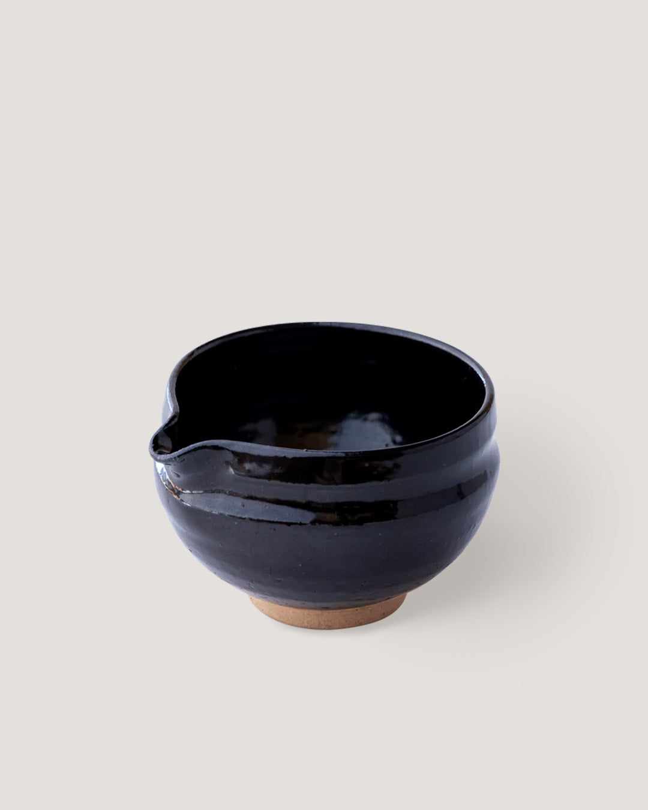
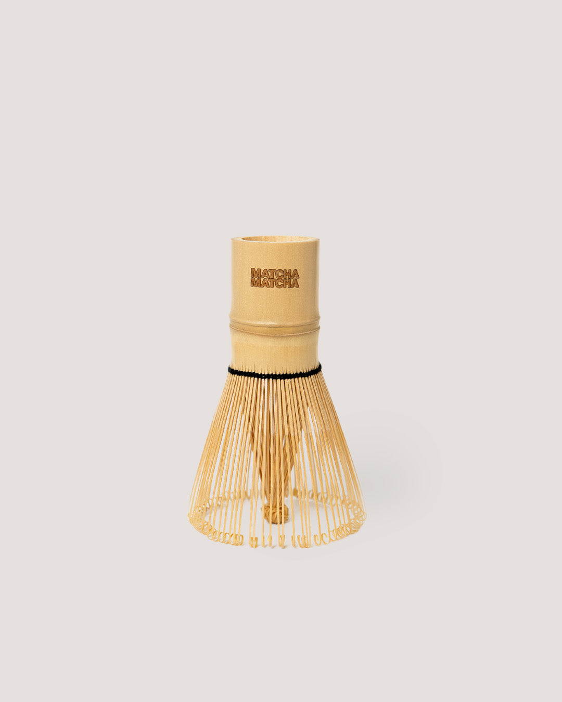
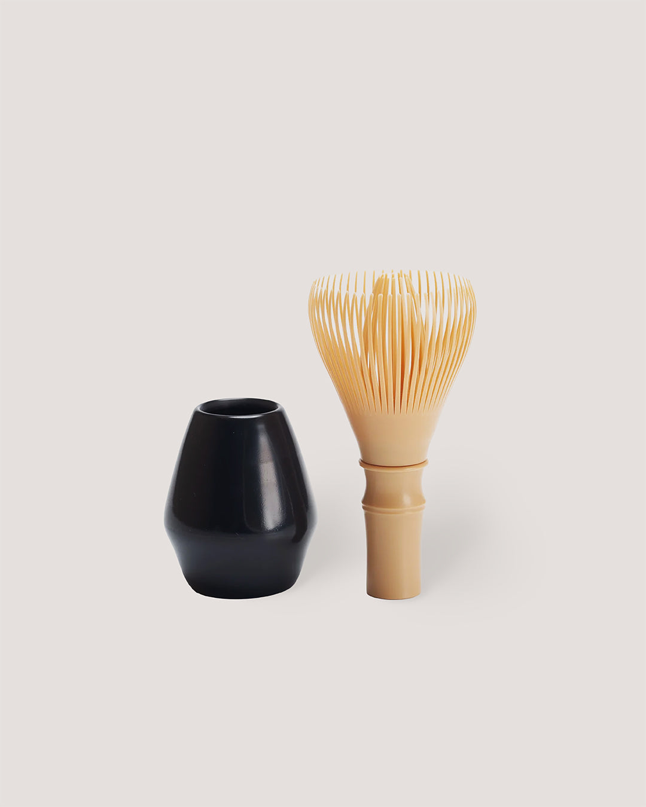
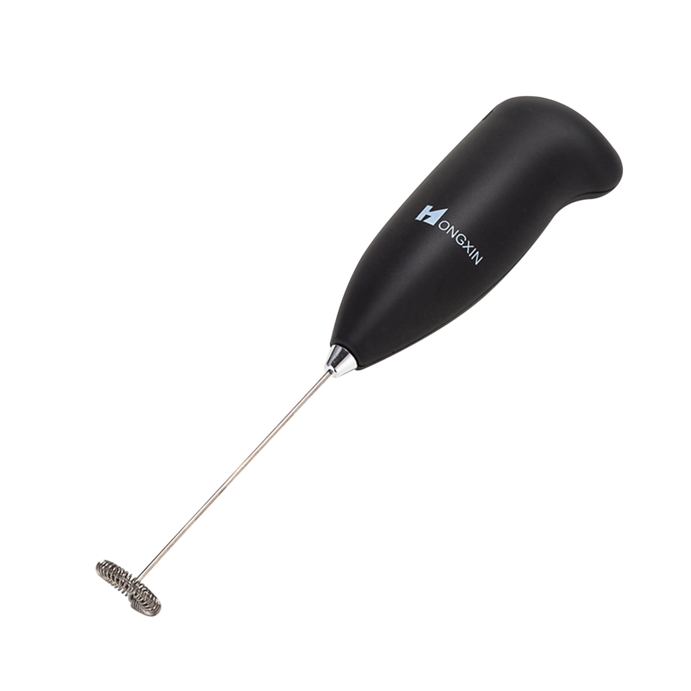
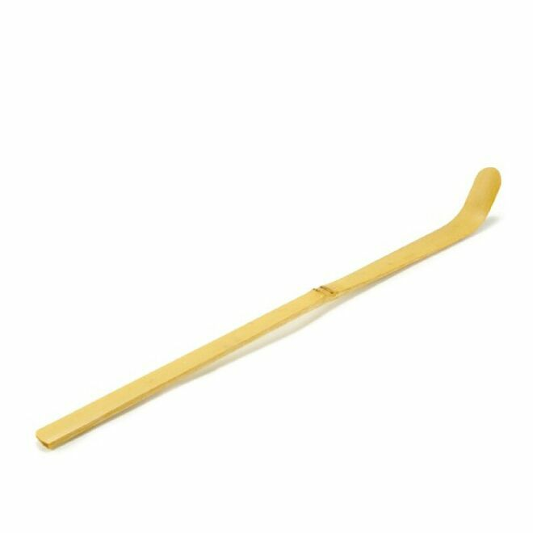
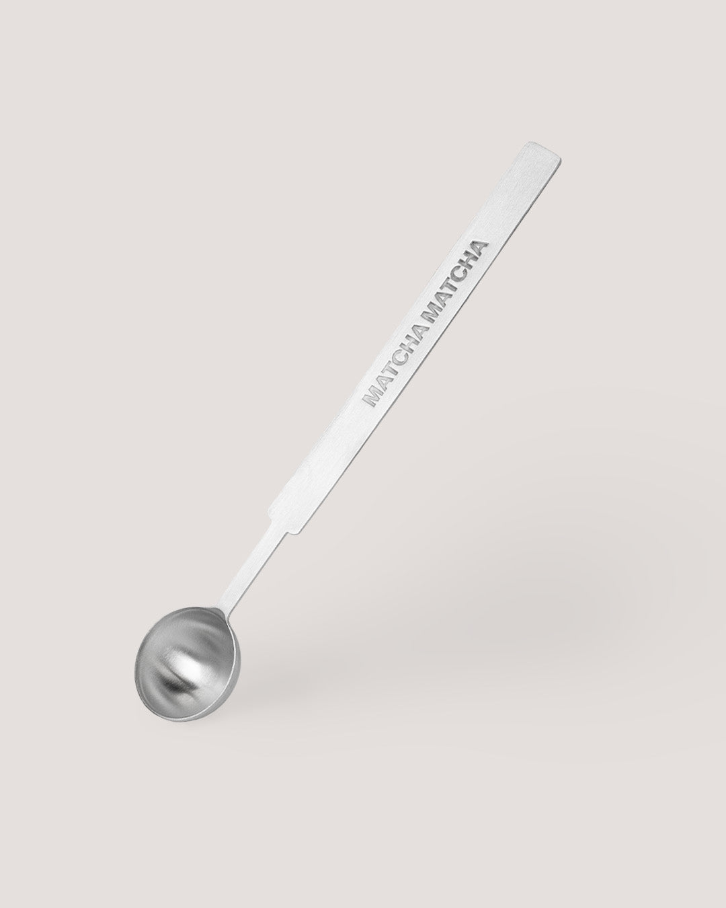
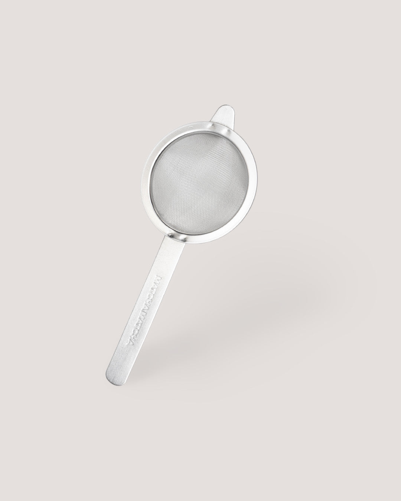
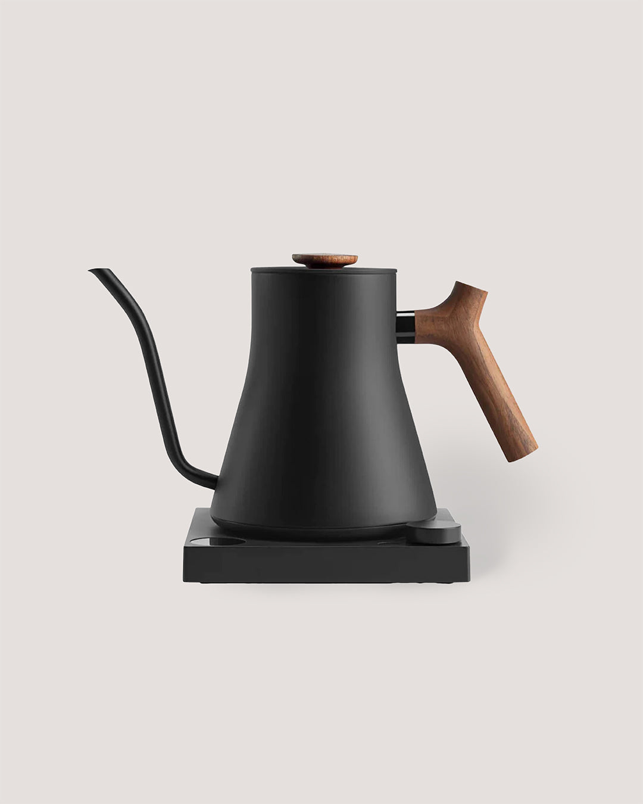

Matcha Bowl (Chawan)
A matcha bowl is wider and deeper than a regular cup, giving you enough space to whisk properly.
Why it matters: Allows smooth, even whisking, Helps create fine foam, Comfortable to hold while preparing matcha.
What to look for: A wide opening, A slight curve at the bottom to help prevent clumps, A pouring spout if you plan to make matcha lattes.

Bamboo Whisk (Chasen)
The bamboo whisk is the traditional tool for preparing matcha. Its fine tines are flexible and well suited for whisking matcha evenly and creating a smooth, frothy texture.
Why people choose it: Traditional matcha preparation, Lightweight and comfortable to whisk with, Creates a smooth, well-aerated cup.
Tips: Soak the whisk briefly in warm water before use, Whisk in a quick W or M motion, Rinse with water only and let it air dry.

Resin Whisk
A resin whisk is a modern alternative that offers a similar whisking experience with easier maintenance. It is designed to whisk matcha efficiently and create foam, just like a bamboo whisk.
Why people choose it: Durable and long-lasting, Easy to clean and maintain, Great for everyday use or travel.

Electric Whisk
The matcha electric frother offers convenience to matcha making. Whisking your matcha with this tool is quick and seamless. It’s able to properly mix the matcha powder and water to create a homogenised mixture, while still create the layer of froth on top. The matcha electric whisk is best used for on-the-go and daily use.

Bamboo Tea Scoop (Chashaku)
The chashaku, made from a single piece of fine bamboo, is the traditional tool used to measure your matcha for one serving to drink. One chashaku scoop holds around one gram or 1/4 teaspoon of matcha powder. One heaping chashaku scoop holds around two grams or 1/2 teaspoons of matcha powder. It’s recommended to use 2 chashaku scoops in your one serving of matcha, but it can always be adjusted to your preference on how you take your matcha tea.

Measuring Spoon
Unlike the traditional bamboo scoop, a matcha measuring spoon offers a more modern and straightforward way to portion matcha. These spoons are usually made from stainless steel and are designed to hold a specific amount of matcha, making them easy to use for daily routines. A measuring spoon is especially useful if you make matcha lattes often or prefer a quicker, no-fuss setup. While it may not follow traditional practice, it offers convenience and reliability for everyday use.

Matcha Sifter
When you open your tin of matcha and see clumps, don’t take it as a bad sign. It’s completely normal for matcha clumps to form. That’s why we have the matcha tea sifter. Using a sifter first will get rid of all the unwanted clumps of matcha, giving your a smoother matcha powder that will be easier to whisk.

Kettle
A kettle is an essential part of matcha preparation, as water temperature plays a key role in flavour and texture. Matcha is best prepared with hot water that is not boiling. The ideal water temperature is around 80°C, which helps preserve the natural sweetness and umami of the matcha while avoiding bitterness.
